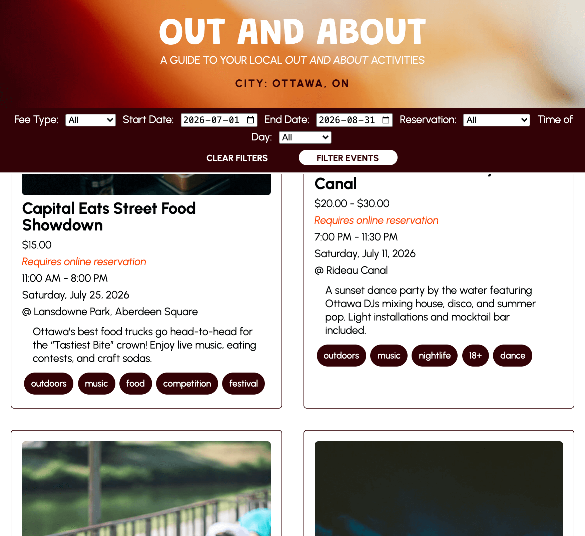
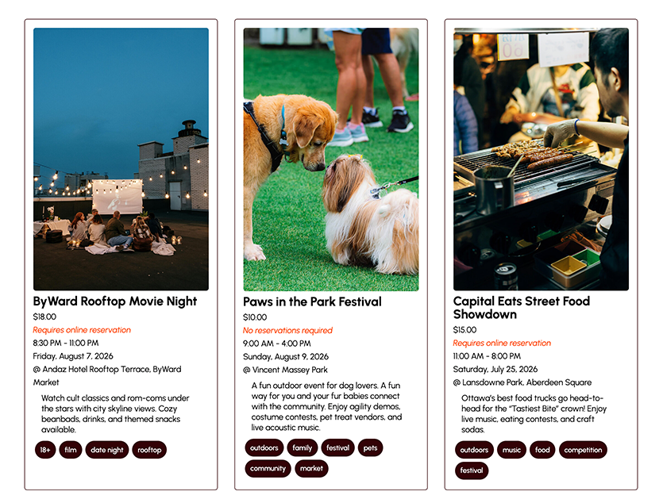

A sticky header and navigation to allow users to adjust filters at any point while scrolling, reducing unncessary back-tracking and minimizing the number of steps required to refine results.
Goal: Create a dynamic event listing page showing fictitious events in Ottawa based on selected filters.
Role: Designer & Developer
Technologies: HTML, CSS, MySQL, PHP
Project Type: Academic Project
Completed: November 2025
View on GitHub Visit Link
A sticky header and navigation to allow users to adjust filters at any point while scrolling, reducing unncessary back-tracking and minimizing the number of steps required to refine results.

A grid-based system with consistent spacing, alignment, and typographic hierarchy is used alongside deliberate color and contrast choices to enhance clarity, usability, and visual balance.